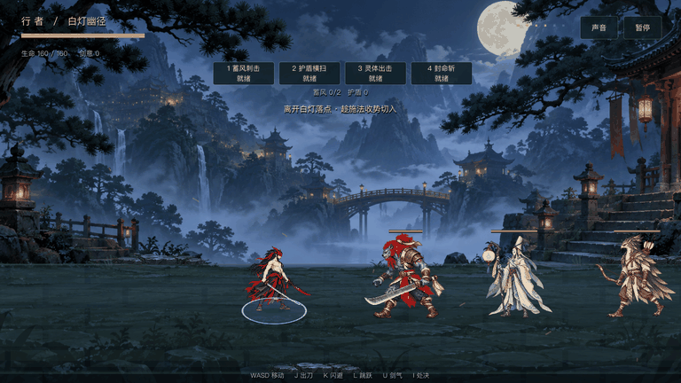
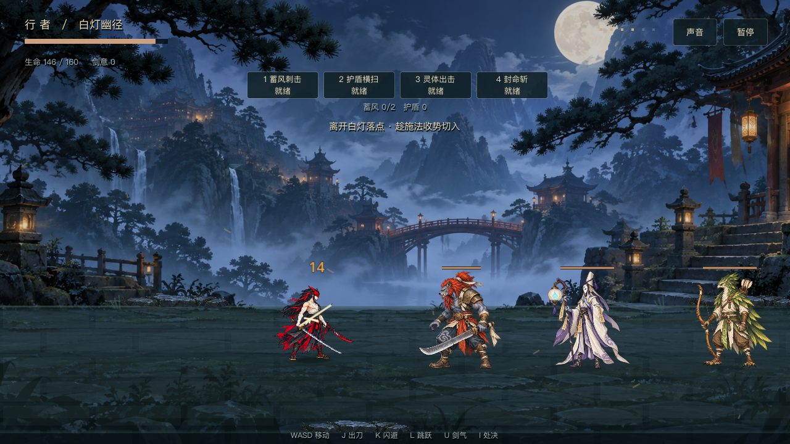
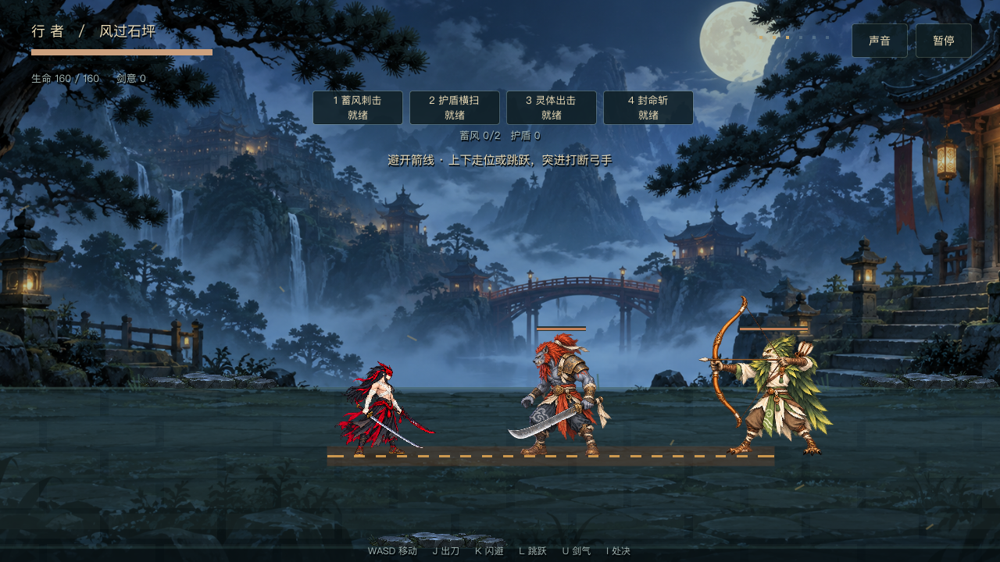
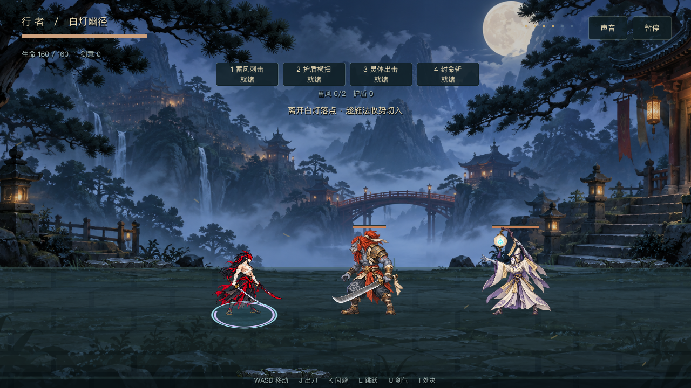

三类怪物 · Godot 实景
身份与攻击已认可 · 新动作及手感待试玩本页使用真实 Godot 主场景截图与战斗逻辑短片。审阅站位手动安排；短片中的 AI、箭矢、落点、伤害和定格由 Run.step 推进。三类同屏用于对照，首关按近战 → 弓手 → 法师分别介绍。

三秒短片循环播放。移动目前为四关键姿态，新步态仍偏僵；近战前后腿遮挡仍待改进，未通过完整步态验收。
身份与剪影

不同攻击规则

弓手：700ms 锁线预警 → 单箭 → 收招。箭不追踪，支持跳跃/闪避规避。
法师：900ms 固定落点 → 一次爆发 → 收招。起手受击或死亡取消法术。运行时加入受击与倒地候选，idle 为静态守势原画。当前四姿态移动和攻击没有宣称补齐平滑中间帧。未提交代码，未作移动端或人工手感验收。
查看原画逐帧与慢放 · Godot 回归日志 · 真实渲染记录